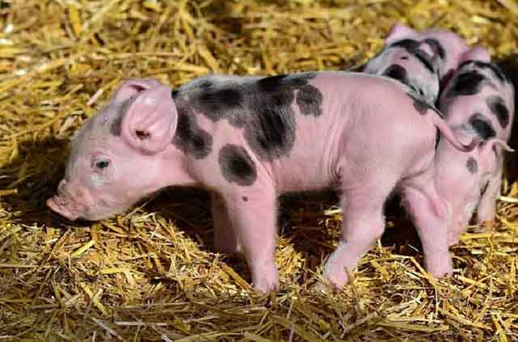
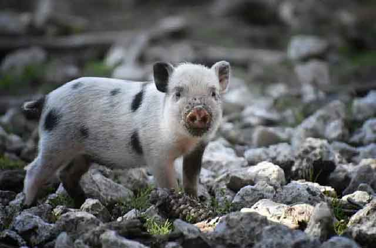
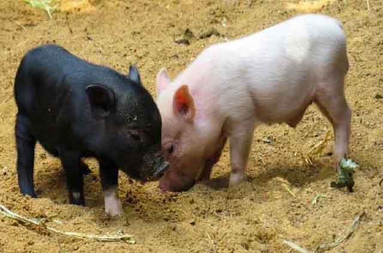

반려동물로 돼지를? 키울 수 있을까?
2019년은 '돼지의 해' 였죠. 그래서 일까요? 2019년에는 유독 돼지를 키우는 사람이 많았습니다. 동물 관련 TV 프로그램에 자주 등장하기도 했었죠. 사람들이 상식적으로 돼지는 '지저분하다' 라는 인식을 많이 갖고 있어요. 하지만 이것은 잘못된 상식으로 돼지는 훨씬 청결하고 깔끔한 동물입니다. 또한, 지능이 상당히 높은 동물이죠! 잘못된 인식과는 달리 반려 돼지를 키우는 분에겐 아주 사랑스럽고 영리한 동물로 여겨질 것입니다. 반려동물로 돼지를 키울 수 있을지! 어떤 특징이 있는지 알아볼게요!
"똑똑한 지능"
사람도 그렇고 반려동물도 겉모습으로 판단해서는 안 됩니다. 반려동물로 주목받고 있는 돼지는 IQ 65~75 정도로 상당히 높은 편입니다. 이 정도 IQ는 사람으로 따지면 3~4세 정도 되는 아이와 맞먹는다고 합니다. 강아지, 고양이보다 훨씬 높은 지능으로 교육을 시키면 훈련할 수 있다고 합니다. 겉으로 보기와는 전혀 다른 모습이죠!
"뛰어난 후각"
후각이 발달한 동물, 대표적으로 강아지가 떠오릅니다. 간식을 어디에 숨겨놔도 곧잘 찾아내서 먹곤 하죠. 돼지도 마찬가지입니다. 뛰어난 후각을 갖고 있으며, 후각 수용체는 개보다 훨씬 많이 갖고 있다고 합니다. 멧돼지로 예를 들자면, 몇십 키로 떨어진 곳에서도 포수의 화약 냄새를 맡을 수 있다고 합니다.
"깔끔한 자기관리"
돼지 하면 뭔가 지저분할 것 같은 모습. 대부분 이런 상상을 하시리라 생각합니다. 하지만 돼지는 뜻밖에도 청결합니다. 흔히 돼지우리에서 지내는 돼지는 좁은 공간에서 지내는 탓에 자신의 똥을 밟고 누워야 하는 상황이 발생합니다. 하지만 가정에서 반려동물로 키우는 돼지는 전혀 그렇지 않습니다. 잠자기, 배변 장소를 가릴 줄 아는 깔끔한 자기관리의 소유자입니다.
게다가 땀샘이 없어 땀을 흘리지 않아 동물에서 나는 특유의 냄새 또한 없습니다. 어쩌면 우리의 편견이 돼지의 이미지를 나쁘게 보고 있는 것은 아닌가 싶네요.
"식사량도 조절할 줄 아는"
우리는 뚱뚱한 사람을 "돼지"라고 부릅니다. 하지만 돼지는 어느 정도 식사량을 조절할 수 있는 종이라고 합니다. 많이 먹는다 하더라도 평균 체질량 지수를 비교해 보면 오히려 사람보다 잘 관리된 몸을 갖고 있다고 합니다. 게다가 무한정으로 먹지도 않죠. 가축 되는 돼지의 이미지만 떠올렸다면, 오히려 인간이 만들어낸 이미지가 아닐까 싶습니다.
반려동물로 돼지를 키운다는 것은 사실 쉽지 않은 일이긴 합니다. 그렇다고 키울 수 없는 동물도 아닙니다. 다만 넓은 공간도 돼지를 기를만한 여력, 책임감 동이 있어야 합니다. 처음에는 귀엽다는 이유만으로 입양했다가 파양하는 것은 돼지뿐만 아니라 모든 동물에게 옳지 않은 행동입니다. 반려동물로 충분히 키울 수 있는 동물, 하지만 그만한 책임감이 뒤따라야겠죠?
[출처] 반려동물로 돼지를? 키울 수 있을까? ｜ 작성자 쿠즈펫